(Updated Jun. 29, 2005)
Here, we take a look at a wide variety of interesting Linux-powered gadgets that don't fit into the other categories of this guide -- everything from web-enabled digital cameras, to automobile telematics systems, to IBM's Linux wrist watch, to . . .
Enjoy!
Smart cameras and video servers . . .
AKCP CameraProbe8 -- [Sep. 10, 2004] -- AKCP used embedded Linux in a data center security monitor that tracks both physical and network-related events. The CameraProbe8 has an integral low-light pan-and-tilt camera, and supports up to eight environmental sensors. It also runs network service monitoring software. It is manageable via secure SNMP or HTTP. details.
AKCP SensorProbe8Linux -- [Jun. 24, 2005] -- The SensorProbe8Linux uses a variety of open source software to monitor server status, and a variety of attached sensors to monitor server room physical security. details
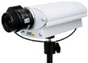Axis 2120 network camera -- [Oct. 23, 2000] -- With its built-in 100 MHz RISC CPU running uClinux and its Ethernet connection, the device serves as an intelligent tool for remote monitoring of live video via an intranet or the Internet. Typical applications include monitoring, surveillance, and webcams. details
Braddahead Second Sight CCTV -- [Sep. 10, 2003] -- Second Sight features an Analog Devices JPEG2000 CODEC, a Linux 2.4 operating system, TCP/IP communications, SNMPv3 network management, and input/output ports including USB 2.0 and SCSI-2. BraddaHead says the system is designed to support "the most sophisticated integrated CCTV applications." details
CFD Elettronica Plenitude Premium -- [Dec. 22, 2004] -- A home intrusion detection system with cameras tripped by infrared sensors. It includes 32 fully wireless sensors with a claimed battery life of three years, and can send images to mobile phones using any of three wireless protocols. details
Elphel Model 333 -- [Mar. 23, 2005] -- A Linux-based network camera that uses the Ogg Theora decoder, implemented on an FPGA in open source code. Ogg Theora is said to allow, for the first time, both a low bitrate and high-resolution, high-framerate video. details.
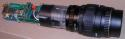Elphel High Speed Gated Intensified Camera -- [Jan. 9, 2002] -- Combines a fast gated micro-channel plate (MCP) image intensifier, a CMOS image sensor, and an embedded computer based on an Axis Communications ETRAX RISC processor running Embedded Linux. Uses a standard 100Mbit Ethernet connection and a web browser. details
George Tang Industrial GDV-08 surveillance server -- [Jan. 21, 2005] -- An eight-channel surveillance DVR (digital video recorder) that runs a 2.4-series kernel on a Via processor, and includes a LAN interface and CD-RW. It supports dual hard drives, and features scheduled recording, motion detection, and email/phone alarms. details
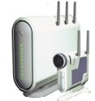SmartVue S2 surveillance cam/server -- [Jan. 4, 2005] -- A security and surveillance system that runs Debian GNU/Linux and supports DVD-resolution video capture from secure, wireless IP-based cameras. The S2 system uses next-generation compression and wireless standards, along with image processing chips capable of dynamically adjusting the exposure setting of each pixel, the company says. details
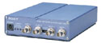Sony Video Network Station -- [Nov. 14, 2000] -- Sony's SNT-V304 Video Network Station contains an embedded Linux operating system running on an Axis ETRAX system-on-chip processor, combined with video processing technologies developed by Axis. It transmits images generated by analog video cameras to remote locations where they can be viewed using ordinary GUI-based web browsers. details
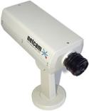StarDot NetCam -- [May 4, 2002] -- This webcam's embedded computer runs uClinux and is based on a Motorola Coldfire microprocessor running at a 54 MHz clock rate, equipped with 8MB of RAM memory and 2MB of nonvolatile Flash memory. Input/output ports include a pair of RS232 serial ports, a 10 Mbits/sec Ethernet port, an I2C serial bus, and four bits of digital I/O. details
Telematics applications and devices . . .
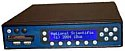National Scientific Travado IBUS system -- [Feb. 10, 2005] -- this "location aware" modular security system is tailored for school bus applications. It the GPS-enabled system logs students onto and off of the bus by using a card reader or thumb print scanner. Other targeted markets include the military, law enforcement, and homeland defense. details
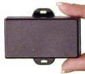Astrata GLP vehicle tracking device -- [Dec. 21, 2004] -- A fleet management services company has used embedded Linux to radically improve its newest vehicle tracking device. Astrata's Linux-based GLP (formerly "Sirius-Lite"), which launched in October, features least-cost routing, uninterrupted operation during OTA (over-the-air) updates, and user customization through an SDK (software development kit). details
Daimler-Chrysler StarScan -- [May 5, 2004] -- Daimler-Chrysler has used real-time embedded Linux in a portable automotive diagnostic tool currently shipping to dealers and repair shops. The StarScan tool enables shops to work on 2004-model year and later Dodge, Chrysler, and Jeep vehicles incorporating CAN (controller area network) buses. details.
Dodge Super8 Hemi concept car -- [Jan. 9, 2001] -- Daimler-Chrysler unveiled this concept car at the North American International Auto Show in January, 2001: the Dodge Super8 Hemi "all-American sedan." The vehicle's Infotronic system is based on four Ethernet-networked PC-compatible computers -- all running on embedded Linux. details
Daimler-Chrysler UMTS test car -- [Jun. 14, 2002] -- The industry's first Universal Mobile Telecommunications System (UMTS) test car is a Mercedes-Benz S 400 CDI, equipped with InCar PCs, two retractable 15 inch TFT-Displays, and wireless keyboards for the use of UMTS-Services. Jentro's 'JentroCar' platform runs on top of an embedded Linux operating system. details
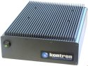Kontron CV Server Car PC -- [Nov. 10, 2004] -- A ruggedized in-vehicle computer with a variety of available CPU modules, from a 300MHz Pentium III to a fanless 1.4GHz Pentium M. Includes an impressive array of vehicle-specific features. details
Naviflash European navigation system -- [Nov. 24, 2004] -- An in-car navigation system with route-planning, traffic avoidance, and spoken direction features. NaviFlash's NaviFlash device comes pre-installed with detailed maps of Germany, and the main roads of Europe, with maps of 17 other European countries also available. details
Oshkosh A3 HEMTT -- [Apr. 1, 2005] -- The Oshkosh A3 HEMTT (heavy expanded mobility tactical truck) has a fault-reporting system based on embedded Linux running on an ARM 9E processor, along with the db.* database from ITTIA. details
Sony NV-XYZ in-car 3D mapping and infotainment center -- [Jun. 10, 2004] -- The NV-XYZ 33, 55, and 77 turn driving into a video game with amazing 3D map navigation technology that shows a street-level view of actual buildings. The devices also include media players, hard drives, GPS, and PC connectivity. They are based on a Linux 2.4-series kernel. details.
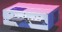Sensoria telematics platform -- [Mar. 5, 2002] -- Sensoria's mGate is an open in-vehicle telematics platform based on Hitachi's SuperH RISC architecture. It contains an embedded Linux operating system and JVM with drivers and APIs for telematics related peripherals such as the vehicle bus, GPS, and cellular modem. details
TomTom Go -- [Oct. 29, 2004] -- The TomTom Go is a Linux-based in-car GPS navigation system available with or without preloaded maps. The device mounts to the dashboard or windshield, providing a 3D view of the road ahead, as well as text-based and spoken driving directions. TomTom claims it is the smallest car navigation device available. Details here and here
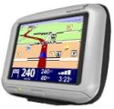TomTom Go 300 and 700 -- [Mar. 15, 2005] -- The TomTom Go 700 and 300 can use Bluetooth-enabled mobile phones to access service offerings, and the 700 can be used as a hands-free phone kit. Details
Volvo ITS4Mobility -- [Sep. 3, 2003] -- Volvo Mobility Systems, a telematics unit within the Volvo Group, is using MontaVista Linux Professional Edition on its ITS4mobility product, an Intelligent Transport System (ITS) for public transportation organizations that provides traffic control and travel information. details
The rest . . .
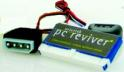Asterisk PC-Reviver -- Sep. 20, 2004] -- The PC Reviver from Asterisk replaces the hard drive in aging computers with a solid-state flash memory device that boots an embedded Linux OS. The "revived" computer can then be used as a thin-client network appliance for Citrix, Windows, Linux, and/or browser-based server-centric computing networks. details
BIAC Portable Medical Muscle Stimulator -- [Jul. 7, 2004] -- Brime Italia used Linux as the embedded software platform in a family of portable muscle stimulator devices that it developed for BIAC Srl. The BIAC Portable Medical Electric Muscle Stimulators integrate color touchscreen displays, wireless networking, and medical sensor interfaces. The family comprises three models that target the home health, fitness, and physical therapy markets, respectively. details
C Data Solutions CompactFlash Computer -- [Apr. 3, 2005] -- A complete Linux-based computer system in a Type II CompactFlash (CF) card, the "Compact Flash Computer" (CFC) can be mixed and matched with third-party CF-card peripherals and carrier boards to instantly create miniscule Linux systems based entirely on CompactFlash cards. Details here and here
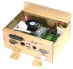Chassis Plans 11309-101 electronic voting computer -- [Dec. 6, 2004] -- Chassis Plans is shipping a small PC intended for use in computerized voting systems, kiosks, and other embedded Linux applications. The "11309-101" ran Linux during testing with the FEC (Federal Election Committee) and FCC (Federal Communications Commission), the company says. details
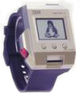Citizen and IBM Linux WatchPad -- [Oct. 11, 2001] -- Citizen Watch and IBM Research are collaborating on Linux Watch technology and have jointly developed their first prototype, to explore a new type of personal information access device for the pervasive computing era. It contains a 32 bit MPU (18-74 MHz) with 8MB DRAM and 16MB Flash, has a 320 x 240 (QVGA) pixel display with touch panel, and runs a Linux 2.4.x kernel with a Microwindows GUI. Interfaces include Bluetooth, IrDA, and RS232. details
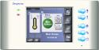CorAccess Companion -- [Oct. 28, 2002] -- This device give homeowners one-touch access to lighting, appliances, thermostat and security control, as well as a digital photo frame, and provide a convenient camera monitoring function which makes it easy to check the front door, the kids' playroom, and even traffic and weather. The embedded Linux software platform is based on a 2.4.x Linux kernel along with Qt as the graphics environment. details
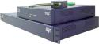Cyclades AlterPath KVM -- [May 25, 2004] -- A keyboard, video, and mouse (KVM) server that features Cat5 wiring to servers and remote access terminals, as well as optional Web-based IP access. details.
Violet Dal emotional lamp -- [May 27, 2004] -- Embedded Linux powers the first "emotional lamp," a WiFi-connected device that can be programmed to respond to real-world events by emanating sequences of gentle color. The lamp has won prestigious design awards, and is available at Paris department store Galeries Lafayette, or direct, for 790 Euros (about $937). details
Digital Pioneer Intella-Pay Payment Station -- [Sep. 16, 2003] -- Embedded Linux p[owers this innovative, next-generation payment terminal for parking lots. The Intella-Pay Payment Station's embedded computer is based on an XScale-based SBC running a Linux 2.4.19 kernel and the Familiar Distribution. In addition to networking the meter for payment processing and remote management, the embedded Linux-powered computer interfaces with numerous subsystems that monitor various activities and device states. details
DLink Central Home Drive -- [Sep. 17, 2003] -- Home communications specialist D-Link worked with Intel to build this device, which leverages embedded Linux and Universal Plug-n-Play (UPnP) technology to create a network-attached repository for shared multimedia files in the home that works out of the box in heterogeneous networks. The device boots MontaVista Linux off 8MB of Compact-Flash, stores files on an upgradable 20GB laptop-sized drive, and shipped mid-October 2003 with an MSRP of $249.99. details
 Eason Technology 5000 HMI -- [May 8, 2003] -- This Linux-based HMIs (human-machine interface) targets industrial automation applications requiring operator input and prompting, process monitoring, and connection to other control and process equipment. The device is offered with a choice of an 8- or 14-inch color TFT LCD display. details Eason Technology 5000 HMI -- [May 8, 2003] -- This Linux-based HMIs (human-machine interface) targets industrial automation applications requiring operator input and prompting, process monitoring, and connection to other control and process equipment. The device is offered with a choice of an 8- or 14-inch color TFT LCD display. details
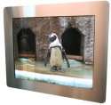First Technologies FXA-50 -- [Apr. 7, 2004] -- A network media player for signage and advertising applications in the transportation, hospitality, and corporate markets, the FXA-50 is less than 2 inches thick, offers LCD display options from 3.9 to 10.4 inches, and comes with central management software. details
Fluke Networks EtherScope -- [Oct. 26, 2004] -- Fluke Networks has used embedded Linux to build a handheld network analyzer intended to help network technicians and administrators install, maintain, and troubleshoot 10/100/gigabit enterprise networks. The EtherScope can quickly map, scan, and test live copper-based Ethernet LANs for configuration, wiring, and other problems. details
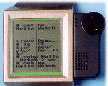IBM Linux Wrist Watch -- [Aug. 7, 2000] -- While not currently planned for production, this fascinating IBM R&D project has produced a wrist-wearable computer prototype that performs the functions of a wrist watch, email terminal, and more. Inside, there's a complete Embedded Linux computer based on a Cirrus EP7211 system-on-chip processor, 8MB of RAM, 8MB of flash, plus both IrDA and radio wireless communications interfaces. details
Intel Personal Server -- [Sep. 5, 2003] -- Intel Labs is prototyping a potentially revolutionary new "personal server" that runs on embedded Linux. The tiny device -- smaller than a PDA -- comprises a hard disk, BlueTooth, a Web-DAV enabled HTTP daemon, and other technologies enabling the user to access and modify their files from any enabled PC within their "Personal Area Network." In theory, this would allow the worker to access their own data -- essentially to have their own PC -- at any suitable workstation as long as their personal server was nearby. details
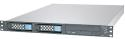Intellireach MessageScreen -- [Jul. 7, 2004] -- IntelliReach has used SuSE Linux in a spam-, virus-, and image-filtering network appliance supporting Notes, GroupWise, and Microsoft mail servers. The MessageScreen blocks 98 percent of spam, the company says, with "virtually zero" false positives. It targets companies wishing to create and enforce effective email policies. details
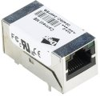Kleinhenz Picotux -- [Apr. 1, 2005] -- A network-enabled Linux system barely larger than a standard RJ-45 Ethernet jack, Picotux is based on the DigiConnect ME module from Digi International, along with a 2.4.27 uClinux port developed by Kleinhenz. details
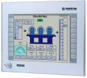Kontron V Panels -- [Dec. 17, 2004] -- A high performance, low power HMI (Human Machine Interface) Panel PC based on a Pentium M processor. The modular, rugged V Panel is available in a range of sizes targeting a range of industrial applications. details
Lucid Signs electronic signs -- Feb. 3, 2005 -- Lucid Signs has embedded Linux in a family of electronic signs for corporate campuses, meeting rooms, hotels, restaurants, and museums. The LCD-based signs function like network printers, and run a configurable, modular Linux-based operating system called "SignOS" that powers a number of other products as well. details
NEC Infrontia BV TwinPOS -- [May 11, 2005] -- A division of NEC in Holland is shipping a POS (point-of-sales/service) terminal that can run embedded Linux. NEC Infrontia BV says the Twinpos Acton's ability to run Linux allows companies with custom applications to run them on a normal POS terminal, rather than on PC hardware. Details
Orion Personal Cluster -- [Apr. 26, 2005] -- A Linux-based "personal cluster" based on 96 Transmeta processors in a case little larger than a normal PC, the DS-96 Deskside Cluster Workstation costs $100,000, draws 1,500 watts, and offers 110 Gflops sustained and 230 Gflops peak performance, Orion claims. Details
Quorum Tools Quorum -- [Sep. 5, 2003] -- Powered by a high-spec'ed mini-ITX system with five graphics tablets attached via USB, the Quorum attaches to a projector to enable group drawing and visual collaboration. Documents can be "printed" to the Quorum, then annotated and saved for redistribution. An Apache Tomcat server and Java programs enable remote web users to take part as well, pointing and drawing with their mice or other input devices. details
 Real Digital Media Neocast Media Player XP -- [Apr. 15, 2005] -- A networked digital signage product with Flash and central management capabilities, the RDM Neocast is based on a Via mini-ITX board. The company expects the digital signage market to standardize on Linux, because its stability has "obvious advantages." Details Real Digital Media Neocast Media Player XP -- [Apr. 15, 2005] -- A networked digital signage product with Flash and central management capabilities, the RDM Neocast is based on a Via mini-ITX board. The company expects the digital signage market to standardize on Linux, because its stability has "obvious advantages." Details
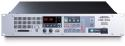Roland Edirol RG-100 -- [Jul. 6, 2004] -- Roland ED Corporation used embedded Linux to power a real-time graphics presenter to launch in August. The Edirol RG-100 creates 3D graphics and presents high-resolution images for signs and advertisements on large-scale displays at retail shops, amusement parks, commercial showrooms, and other inside or outside facilities. details
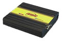Rymic ruggedized computer -- [Dec. 18, 2000] -- This compact uClinux-based computing device is designed to withstand the hostile environments of military and industrial mobile applications. It is meant to be used for vehicle diagnostics, performance data monitoring, and predictive failure analysis. details
Sena UPSLink -- [Oct. 8, 2003] -- This small device enables the management of an uninterruptible power supply (UPS) on an open network. The device is accessed via Internet/SNMP protocols, to enable a smart UPS to be managed on the network by SNMP, a web client, or telnet. It supports 3-phase UPSs, providing real-time alarm notification by SNMP trap, SNMP notification, and email. details
Sicom Systems SL-18 POS client -- [Oct. 7, 2002] -- Sicom Systems Inc. announced that they are in the process of installing 160 Linux-based SL-18 point-of-sale (POS) systems in all of the Burger King restaurants in Puerto Rico. details.
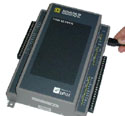Square D power management device -- [Nov. 3, 2000] -- The POWERLOGIC Thin Server is used for remotely monitoring and controlling power systems. The device is based on a 133MHz AMD 486 CPU with 16 to 64MB system memory plus a CompactFlash solid state storage device. The embedded operating system is based on Linux kernel 2.0.18 plus a home grown "ultra slim" webserver application. details
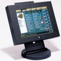Squirrel Systems SquirrelONE -- [Nov. 29, 2004] -- The SquirrelOne is a restaurant POS (point-of-sales/service) system that uses Linux-based POS clients along with a Windows-based server. details
SSV TRM/X16 -- [Sep. 24, 2003] -- The SSV TRM/916 and smaller TRM/816 are based on SSV's new DIL/Net type ADNP1520 CPU module. The systems feature a 133MHz CPU, 64MB RAM, and 16MB of on-board flash memory integrated into an industrial low-power design. Compact flash adapter, CAN, serial, and PC/104 interface are also available, along with a special USB adapter available soon. Both the TRM/816 and TRM/916 now support extended temperature ranges, typically from -20 to +70 degrees Celsius, and are available in a protected case suitable for direct mounting in vehicles and on machines. details
Trintech Smart 5000 PIN-entry device (PED) -- [Nov. 11, 2004] -- A hybrid card reader that supports both magnetic swipe/signature authentication and the new generation of chip-and-PIN smart cards. Rolled out by Shell in its company-owned stations in the UK and Ireland. details
Verifone Mx870 PIN pad -- [May 30, 2005] -- VeriFone has used embedded Linux to build a secure PIN pad that doubles as an in-store advertising kiosk. The MX870 supports RFID, smart cards, biometric identification, and various touch technologies, and is designed to deliver multimedia presentations while customers complete their checkout process. Details
Wincor Nixdorf POS -- [Oct. 6, 2000] -- The BEETLE retail point-of-sale (POS) systems are implemented using a Linux-based thin client device architecture, incorporating the newly released JavaPOS 1.5 standard. The embedded computer is based on an x86 processor. details
Return to top of guide
 |


 news feed
news feed